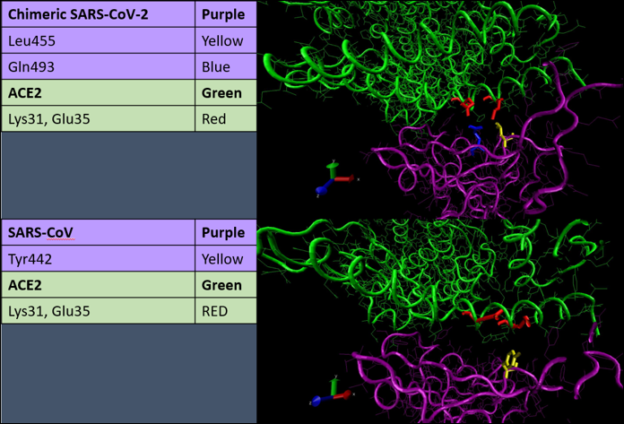
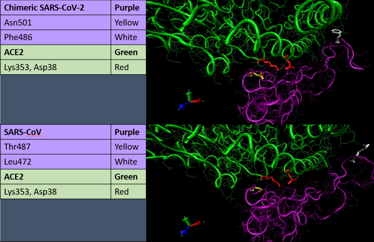

Analyzing Structural Differences in the Bonding of SARS-CoV and SARS-CoV-2 with the ACE2 Enzyme
Visualizing a region of structural differences
In the previous lesson, we identified a region between residues 476 and 485 of the SARS-CoV-2 spike protein that corresponds to a structural difference between the SARS-CoV-2 and SARS-CoV RBMs. Our goal in this lesson is to determine whether the differences we have found affect binding affinity with the human ACE2 enzyme.
We know from our work in this course that a tiny change can produce a big difference in the high-level behavior of a finely tuned system. It may therefore be the case that subtle changes in the ability of SARS-CoV-2 to stick to the ACE2 enzyme can change the virus’s infectiousness enough to greatly influence its spread through the human population.
We will first use VMD to highlight the amino acids in the region of interest of the SARS-CoV-2 spike protein’s structure. If you are interested in doing so, please follow the tutorial below, which we will consult throughout the rest of this lesson.
Analyzing three sites of conformational differences
Our region of interest is one of three sites showing significant conformational differences between the SARS-CoV-2 and SARS-CoV spike proteins that were identified by Shang et al.1. We will now discuss each of these three locations and see how they affect binding affinity between the spike protein and ACE2.
Site 1: loop in ACE2-binding ridge
The first location is our region of interest from the previous lesson and is found on a loop in a region called the ACE2 binding ridge. This region is shown in the figure below, in which SARS-CoV-2 is on top and SARS-CoV is on the bottom.
Structural differences are challenging to show with a 2-D image, but if you followed the preceding tutorial, then we encourage you to use VMD to view the 3-D representation of the protein. Instructions on how to rotate a molecule and zoom in and out within VMD were given in our tutorial on finding local protein differences.
STOP: See if you can identify the major structural difference between the proteins in the figure below. Hint: look at the yellow residue.
 A visualization of the loop in the ACE2-binding ridge that is conformationally different between SARS-CoV-2 (top) and SARS-CoV (bottom). The coronavirus RBD is shown in purple, and ACE2 is shown in green. Structural differences cause certain amino acid residues (highlighted in various colors) to behave differently between the two interactions.
A visualization of the loop in the ACE2-binding ridge that is conformationally different between SARS-CoV-2 (top) and SARS-CoV (bottom). The coronavirus RBD is shown in purple, and ACE2 is shown in green. Structural differences cause certain amino acid residues (highlighted in various colors) to behave differently between the two interactions.
The most noticeable difference between SARS-CoV-2 and SARS-CoV relates to a “hydrophobic pocket” of three hydrophobic ACE2 residues at positions 82, 79, and 83 (methionine, leucine, and tyrosine). This pocket, which is colored silver in the above figure, is hidden away from the outside of the ACE2 enzyme to keep these amino acids separate from water. In SARS-CoV-2, the RBD phenylalanine residue at position 486 (yellow) inserts itself into the pocket, favorably interacting with ACE2. These interactions do not happen with SARS-CoV, and its corresponding RBD residue, a leucine at position 472 (yellow), is not inserted into the pocket 1.
In what follows, we use a three-letter identifier for an amino acid followed by a number to indicate the identity of that amino acid followed by its position within the protein sequence. For example, the phenylalanine at position 486 of the SARS-CoV-2 spike protein would be called Phe486.
Although the interaction with the hydrophobic pocket is the most critical difference between SARS-CoV-2 and SARS-CoV, there are two other key differences that we would highlight. First, in SARS-CoV-2, a main-chain hydrogen bond forms between Asn487 and Ala475 (shown in red in the above figure), which creates a more compact ridge conformation, pushing the loop containing Ala475 closer to ACE2. This repositioning allows for the N-terminal residue Ser19 of ACE2 (colored cyan in the above figure) to form a hydrogen bond with the main chain of Ala475. Second, Gln24 in ACE2 (colored orange in the above figure) forms a new contact with the RBM.
Site 2: hotspot 31
Hotspot 31 is not a failed Los Angeles nightclub but rather another site of notable conformational differences between SARS-CoV-2 and SARS-CoV, which was previously studied in SARS-CoV as early as 200823. This location earns its name because it involves a “salt bridge”, or a combination of hydrogen and ionic bonding between two amino acids, that takes place between Lys31 and Glu35. Hotspot 31 is colored red in the figure below.
STOP: Again, see if you can spot the differences between SARS-CoV-2 and SARS-CoV.
 Visualizations of hotspot 31 in SARS-CoV-2 (top) and SARS-CoV (bottom). The RBD is shown in purple, and ACE2 is shown in green. In SARS-CoV, hotspot 31 corresponds to a salt bridge, which is broken in SARS-CoV-2 to form a new hydrogen bond.
The figure above shows how the salt bridge is radically different in the two viruses. In SARS-CoV, the two residues appear to point towards each other because in the SARS-CoV RBM, Tyr442 (colored yellow in bottom figure) supports the salt bridge between Lys31 and Glu35 on ACE2. In contrast to Tyr442 in SARS-CoV, the corresponding amino acid in SARS-CoV-2 is the less bulky Leu455 (colored yellow in top figure), which provides less support to Lys31. This causes the salt bridge to break, so that Lys31 and Glu35 of ACE2 point in parallel toward the RBD residue Gln493 (colored blue). This change allows Lys31 and Glu35 to form hydrogen bonds with Gln493 in SARS-CoV-21.
Site 3: hotspot 353
Finally, we consider hotspot 353, which involves another salt bridge connecting Lys353 and Asp38 of ACE2. In this region, the difference between the residues is so subtle that it takes a keen eye to notice them.
 Visualizations of hotspot 353 in SARS-CoV-2 (top) and SARS-CoV (bottom). The RBD is shown in purple, and ACE2 is shown in green. In SARS-CoV, the RBD residue Thr487 (yellow) stabilizes the salt bridge between ACE2 residues Lys 353 and Asp38 (red). In SARS-CoV-2, the corresponding RBD residue Asn501 (yellow) provides less support, causing ACE2 residue Lys353 (red residue on the left) to be in a slightly different conformation and form a new hydrogen bond with the RBD 1.
In SARS-CoV, the methyl group of Thr487 (colored yellow in bottom figure) supports the salt bridge on ACE2, and the side-chain hydroxyl group of Thr487 forms a hydrogen bond with the RBM backbone. The corresponding SARS-CoV-2 amino acid Asn501 (colored yellow in top figure) also forms a hydrogen bond with the RBM main chain. However, similar to what happened in hotspot 31, Asn501 provides less support to the salt bridge, causing Lys353 on ACE2 (colored red) to be in a different conformation. This allows Lys353 to form an extra hydrogen bond with the main chain of the SARS-CoV-2 RBM while maintaining the salt bridge with Asp38 on ACE21.
You may be wondering how researchers can be so fastidious that they would notice all these subtle differences between the proteins, even if they know where to look. The fact is that they have help in their subjective descriptions of how protein structure affects binding. In the next lesson, we will discuss how to quantify the improved binding of SARS-CoV-2 to ACE2 at the three locations described above.
-
Shang, J., Ye, G., Shi, K., Wan, Y., Luo, C., Aijara, H., Geng, Q., Auerbach, A., Li, F. 2020. Structural basis of receptor recognition by SARS-CoV-2. Nature 581, 221–224. https://doi.org/10.1038/s41586-020-2179-y ↩ ↩2 ↩3 ↩4 ↩5
-
Li, F. 2008.Structural analysis of major species barriers between humans and palm civets for severe acute respiratory syndrome coronavirus infections. J. Virol. 82, 6984–6991. ↩
-
Wu, K., Peng, G., Wilken, M., Geraghty, R. J. & Li, F. 2012. Mechanisms of host receptor adaptation by severe acute respiratory syndrome coronavirus. J. Biol. Chem. 287, 8904–8911. ↩